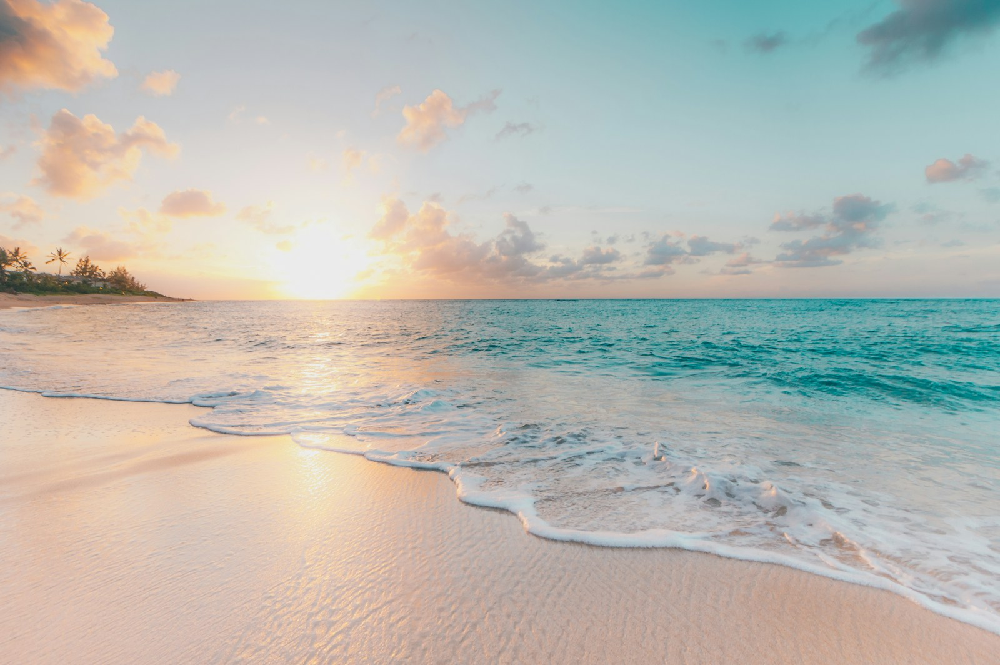

С детьми
Проверю заход в море, трансфер, питание, тень, шум и программу детского клуба по возрасту.
Туристическое бюро Ульяны Аникеевой
Собираю поездки под ваш ритм, состав семьи и бюджет. Объясняю разницу между похожими отелями и заранее говорю о нюансах.

Для первого разговора
01 / 06Каталог ниже нужен для первого сравнения. Названия отелей и основные факты можно проверить на их официальных сайтах.
Фотографии показывают направление, а не конкретный отель. Цену, рейс и номер уточняем под даты поездки.
Проверю заход в море, трансфер, питание, тень, шум и программу детского клуба по возрасту.
Поищу тихие зоны, удобный номер, хорошие рестораны и места для неспешных вечеров.
Уберу варианты с постоянным шумом, очередями и слишком плотной застройкой.
Подберу удобную локацию, прогулки, рестораны и пляж без потери времени на дорогу.
Куда смотреть
Сезонность — ориентир. Погода и условия меняются, поэтому перед бронированием проверим детали под ваши даты.
Каталог-ориентир
Стоимость тура динамическая: зависит от города вылета, дат, питания, категории номера и состава путешественников. Карточки не являются публичной офертой.
Спокойно и по делу
Вы рассказываете, что важно. Я проверяю предложения, собираю короткий список и объясняю разницу между вариантами.
Даты, город вылета, бюджет, состав и важные мелочи — от тишины ночью до кофе утром.
Несколько вариантов с плюсами, ограничениями и понятной разницей между ними.
Проверяю наличие, перелёт, трансфер, страховку и финальную стоимость перед оплатой.
Документы, напоминания и поддержка до поездки, во время отдыха и после возвращения.
Что проверяю
Одинаковая звёздность не означает одинаковый опыт. Поэтому сравниваем не только цену.
Заход, глубина, кораллы, волны, расстояние и удобство для детей.
Ремонт, планировка, слышимость, спальные места и вид без сюрпризов.
Формат, выбор, детское меню, напитки и работа ресторанов по сезону.
Время трансфера, прогулки, инфраструктура и то, что находится рядом.
Музыка, очереди, приватность и количество людей на территории.
Рейсы, багаж, стыковки, трансфер, страховка и документы.
Полезно до бронирования
Ищу повторяющиеся факты и смотрю, в какой сезон ездил автор. Одна средняя оценка без контекста мало что объясняет.
Заход, волна, тень, расстояние, обувь, понтон и глубина.
Сравниваем концепцию, территорию, состояние номеров и работу сервиса.
Частые вопросы
Да. Подбор можно сделать из любого доступного города России — сравним удобство маршрута и итоговую стоимость.
В каталоге указаны конкретные отели, но не фиксированные пакеты. Точная цена появляется только после проверки дат, рейса, состава и категории номера.
Это нормально: карточки нужны для ориентира. По вашим ответам я найду другие варианты и объясню, почему они точнее.
Да, формат поездки обсуждаем индивидуально: пакетный тур, только проживание или более сложный маршрут.
Срок зависит от сложности запроса и доступности предложений. После первого сообщения Ульяна скажет, когда сможет прислать подборку.
Можно начать с одного сообщения
Кто едет, откуда, примерные даты и что особенно важно. Длинная анкета не нужна.